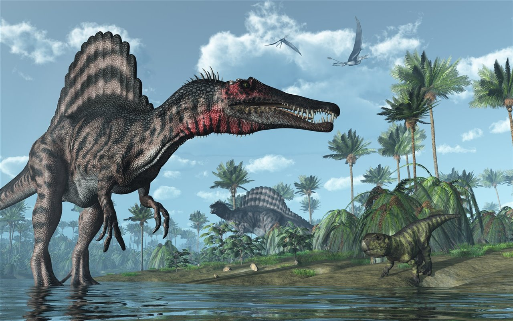

Espinosaurio

El Espinosaurio fue uno de los dinosaurios carnívoros más grandes que han existido, incluso más largo
que el T-Rex. Se destaca por la gran vela en su espalda y por estar adaptado para pasar mucho tiempo
en el agua, cazando peces como su principal alimento.